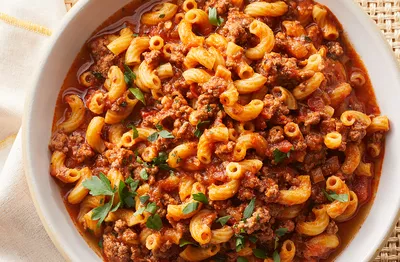

American Goulash
Ingredients:
- 1 lb ground beef
- 1 onion, chopped
- 2 cloves garlic, minced
- 1 can (14 oz) diced tomatoes
- 1 can (8 oz) tomato sauce
- 1 cup elbow macaroni, uncooked
- 1 cup beef broth
- 1 teaspoon dried oregano
- 1 teaspoon dried basil
- 1/2 teaspoon garlic powder
- 1/2 teaspoon onion powder
- Salt and pepper to taste
- 1 cup shredded cheddar cheese
Instructions:
- In a large skillet, cook ground beef over medium-high heat until browned. Drain excess fat.
- Add chopped onion and minced garlic to the skillet. Sauté until the onion is translucent.
- Stir in diced tomatoes, tomato sauce, uncooked elbow macaroni, beef broth, oregano, basil, garlic powder, onion powder, salt, and pepper.
- Bring the mixture to a boil, then reduce the heat to low, cover, and simmer for about 15-20 minutes or until the macaroni is cooked and the mixture has thickened.
- Sprinkle shredded cheddar cheese on top, cover the skillet, and let it melt.
- Stir the cheese into the goulash until well combined.
- Serve hot and enjoy!